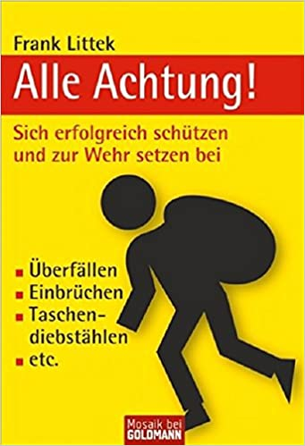
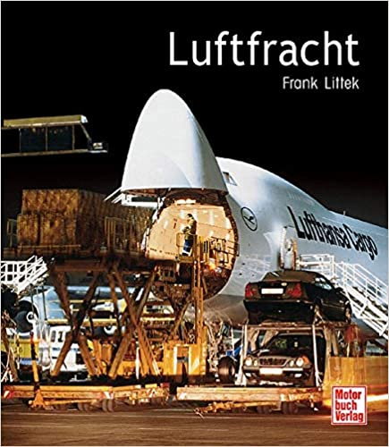

Sachbücher
Bei Sachbüchern wird der Leser zum Protagonisten der Geschichte - und das Buch selbst zur Welt der Reise, die es zu entdecken
gilt.

Dieses Buch veranschaulicht, was vor, während und nach dem Flug passiert. Wie fliegt ein Flugzeug und was ist die
Aufgabe des Piloten? Dazu wird erklärt, warum ein Flugzeug sicher ist und wie sich die, die auch nach all dem noch
Angst haben entspannen können, mithilfe von Kurzfristige Hilfsmitteln, Langfristigen Strategien, Autogenen Trainings
und mehr.
Warum teuer, wenn’s auch günstig geht? Mit Frank Littek entdeckt man Sparmöglichkeiten im Alltag, die ganz einfach
umgesetzt werden können – ob beim Einkauf, in der Wohnung oder beim Auto. Die praktischen Tipps und Tricks helfen
dabei, den Geldbeutel zu schonen, ohne auf den nächsten Restaurantbesuch oder Urlaub verzichten zu müssen. Dieses
Buch ist bares Geld wert!
Ein glaubwürdiger, anwendungsbezogener Geld-Ratgeber für den Erwerb bzw. Bau von Immobilien, den man gut verstehen
und damit auch vorteilhaft nutzen kann.
Im vorliegenden Buch konzentriert sich Frank Littek auf die Darstellung
der jeweils günstigsten Gestaltung der Bau-Finanzierung als wichtigste Voraussetzung für eine optimale Bauplanung
und Bauausführung.
Der Autor spricht den ratsuchenden Bauherren bzw. Immobilienkäufer direkt an, vermeidet das
für Laien oft un- oder missverständliche "Finanz-Chinesisch", macht Vorgänge besser verständlich, verweist auf
bedenkenswerte Probleme bzw. auf die im speziellen Fall bessere Lösung. Wie ein roter Faden ziehen sich durch das
Buch einfach zu durchschauende Beispiele für positive und negative Auswirkungen bei bestimmten Finanzierungswegen.
Sicherheit für Ihr zu Hause!
Dafür gibt es eine große Zahl von Möglichkeiten für Haus und Wohnung. Viele davon
sind nur mit geringen oder sogar mit überhaupt keinen Kosten verbunden.
Frank Littek, bekannt durch seine im
selben Verlag erschienenen Ratgeber zur Bau-Finanzierung und für das Sparen beim Bauen, zeigt in diesem Buch die
vielen im und am Haus bestehenden, meist noch gar nicht wahrgenommenen Schwachpunkte auf. Vor allem beschreibt er
die Vielzahl von Möglichkeiten, die zu sehr viel mehr Sicherheit sowohl im geplanten als auch im bereits
bestehenden Haus bzw. rund ums Haus führen werden.
Es geht dabei um Baumaßnahmen, um Sicherungen (vom
Außengelände bis zu den Einstiegsmöglichkeiten, von den Schließsystemen bis zur Alarmanlage), um das richtige
Verhalten nach einem Einbruch, um geeignete und auch um unnötige Versicherungen, um Verlustnachweise usw. - also
um Rat und Information, wenn man vorsorglich oder spätestens nach einem Schaden auf "Nummer Sicher" gehen will!
Entsprechend der eingebrachten Arbeitsleistung fällt auch die erzielte Ersparnis aus. Sie reicht von ¬ 7.000,-,
die eigentlich jeder Bauherr durch die Übernahme leichter Arbeiten erzielen kann. Bis über ¬ 50.000,-, die sich
durch den weitgehenden Selbstbau des Hauses realisieren lassen.
Fünfstellige Beträge können aber auch in einem
Bereich erzielt werden, der meist vernachlässigt wird: der Finanzierung des Hauses. Durch eine ungünstige Vor- oder
Zwischenfinanzierung, eine schlechte Kombination der Finanzierungsinstrumente oder schlicht ungünstige
Zinskonditionen kommen schnell ¬ 10.000,- und mehr zusammen, die der Bauherr hätte sparen können. Schuld daran ist
nicht zuletzt auch die Finanzierungsmaterie selbst. In ihrer Unübersichtlichkeit, scheinbaren Kompliziertheit und
der Überfrachtung mit Fachbegriffen trägt sie ganz wesentlich dazu bei, den Bau eines Eigenheimes zu einem
Abenteuer werden zu lassen.
Dieses Buch beschreibt die Sachverhalte verständlich. Bei genauer Beschäftigung mit
den einzelnen Finanzierungsinstrumenten zeigt sich schnell, wie einfach und logisch sie im Grunde funktionieren.
Beide Möglichkeiten, Eigenleistung und Finanzierung, zusammen - und noch einige zusätzliche Tricks und Kniffe -
machen letztlich die Kunst des Sparens beim Bauen aus. Und die zu beherrschen, ist für jeden Bauherrn wichtig.

Verbrechern keine Chance lassen!
Jeder kann etwas tun, um sich vor Gewalt und Kriminalität zu schützen.
Wissen, worauf es ankommt: Dieses Handbuch sorgt für Sicherheit. Denn schon eine gute Risikoeinschätzung ist Gold
wert und richtiges Auftreten hilft, Gefahren abzuwenden. Warum viele Selbstverteidigungstechniken für den Notfall
unbrauchbar sind, was Kampfsportarten (nicht) bringen und welche Kniffs tatsächlich helfen – Autor Frank Littek
verrät es.

Luftfracht ist ein wichtiger und immer bedeutenderer Zweig der Luftfahrt. Die weltweite Verfügbarkeit von Waren
und Produkten aller Art innerhalb kürzester Zeit wäre ohne die Luftfracht überhaupt nicht mehr vorstellbar. Die
Branche boomt mit zweistelligen Wachstumsraten. Doch nicht nur alltägliche Konsumgüter, auch Autos oder ganze
Flugzeugteile werden auf dem Luftweg von A nach B transportiert. Kein Transportmittel ist schneller, zuverlässiger
und präziser als die Luftfracht, die mittlerweile den ganzen Globus umspannt. Aber auch unter technischen Aspekten
ist das Thema faszinierend. Dieses Buch befasst sich mit der Geschichte, der Organisation, der Technik und den
Flugzeugen dieses interessanten Luftfahrtbereichs.
Mit den Anschlägen vom 11. September 2001 ist das Thema Sicherheit in Zusammenhang mit dem Fliegen verstärkt ins
Bewusstsein der breiten Öffentlichkeit gedrungen. Der zunächst drastische Rückgang der Passagierzahlen macht bis
heute mehr als deutlich, welchen Vertrauensverlust der Luftverkehr hinnehmen musste. Wie sicher aber ist der
Luftverkehr wirklich? Wie sicher sind die gängigsten Flugzeugtypen? Gibt es Schwachstellen im Luftverkehr; Risiken,
denen sich der Fluggast besser nicht aussetzen sollte? Fragen, auf die dieses Buch konkrete Antworten gibt.
Erstmals erhält der Leser einen umfassenden Überblick über den Stand der Sicherheit im zivilen Flugverkehr: Jedes
der gängigen Verkehrsflugzeuge - von der Boeing 737 über den Airbus A300 bis hin zur Concorde und der mächtigen
Boeing 747 wird kenntnis- und faktenreich hinsichtlich seiner Sicherheit beschrieben. Darüber hinaus zeigt das
Buch die aktuell besonders bedeutsamen Risikoquellen für die Luftfahrt auf. Ein Ausblick auf die Zukunft, die
Erklärung von besonderen Sicherheitssystemen wie TCAS, Einblicke in die Arbeit der Flugunfalluntersucher und die
Bemühungen der Fluggesellschaften im täglichen Kampf um mehr Sicherheit runden das Werk ab.
Anzeigen, Hebel, Schalter, Lämpchen – markantes Kennzeichen der Flugzeug-Cockpits seit den 20er-Jahren. Mit der
Einführung des Blindfluges und der steigenden Komplexität der Maschinen wuchs die Zahl der Instrumente stetig an.
Seit der Einführung von Computern in den 80er-Jahren haben sich die Arbeitsplätze der Piloten zu High-Tech-Kabinen
entwickelt. Frank Littek dokumentiert die Entwicklung der Cockpits von den 20er Jahren bis heute.
Reisen mit modernen Verkehrsflugzeugen gehören heute längst zum Alltag der Menschen. Kaum jemand, der nicht mit
diesem Thema zumindest gelegentlich in Berührung kommt - und sei es auch nur im Urlaub oder durch die
Berichterstattung in den Medien. Trotz der Selbstverständlichkeit, mit der Fluggäste heutzutage im Luftverkehr
reisen, fasziniert die Luftfahrt eine stetig wachsende Zahl von Menschen. Der alte Traum vom Fliegen wird immer
noch geträumt - auch wenn er längst Realität geworden ist. Im ersten Teil dieses Bandes werden die wichtigsten
Flugzeugtypen ausführlich erklärt - von ihrer Entwicklungsgeschichte über Konstruktionsdetails bis hin zu den
geplanten und produzierten Varianten. Hochwertige Fotos und Zeichnungen von Maschinen und ihren technischen Details
illustrieren den Text und erlauben einen Blick hinter die sonst verschlossene Tür des Cockpits. Der zweite Teil
gibt die Geschichte und Gegenwart der wichtigsten internationalen Airlines sowie bekannter Ferienfluggesellschaften
wieder. Neben der wirtschaftlichen Entwicklung und der Geschichte werden das Streckennetz und die Flotte der
jeweiligen Fluggesellschaft vorgestellt. Eine Einführung in die Entwicklung des Luftverkehrs und ein abschließendes
Kapitel, in dem Stichworte und Begriffe aus der Welt der Luftfahrt kurz und prägnant erklärt werden, ergänzen den
Inhalt dieses Buches.
Mit verzweifelter Liebe hängen die Deutschen an ihrer verflossenen Währung, der D-Mark. Sie ist zum Mythos
geworden, zumal sie aufs Engste mit dem deutschen Wirtschaftswunder verbunden ist. Das DM-Gedenkbuch zeichnet mit
einem zwinkernden Auge Höhepunkte in der Biografie der Währung nach, erinnert aber auch an Unbekanntes und
Privates. Dabei wird auch die Vorgeschichte der Mark ins Auge gefasst, die mit der Reichseinheit 1871 begann, und
ein Blick über die Grenzen geworfen, wo ebenfalls Mark-Währungen galten. Dem Buch ist ein Sammeltablett für die
Kursmünzen beigefügt, die eine währungsgeschichtliche Erinnerung an die Vergangenheit ermöglichen.